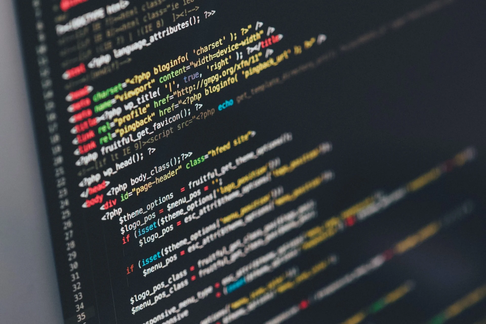

About Us

About Me
👋 Hi, I’m Marcus Carter!
Im the founder of my coding and web development business, and I’m passionate about teaching others how to get started with programming. I’ve been creating games and projects on platforms like Scratch since I was younger, and I’ve now expanded into text-based coding languages. My goal is to share my love for coding with others, especially young learners who want to get started in the world of programming.
How I Got Started
My journey into coding began in high school, during my Grade 11 Entrepreneurial Studies class. It was in that class where I first had the idea to start my own business. I quickly realized the potential for growth and expansion, especially as I saw the need for coding education and development services. My business is all about making coding easier for kids and young learners, giving them a platform to explore, learn, and create their own projects.
My Mission
The main purpose of my business is to help young kids and anyone interested in coding learn the skills they need to succeed. I offer a variety of services, including coding lessons, code reviews, web development, and project commissions. I also aspire to create a game studio as part of the business. Ultimately, I want to make coding more accessible to everyone, especially those who may not know where to start.
What I Offer
At the moment, I focus on website commissions but plan to expand my offerings soon. Currently, I provide:
Coding Lessons: Helping beginners get started with programming.
Code Review: Helping developers improve and optimize their code.
Web Development: Creating custom websites tailored to your needs.
Game Studios & Project Commissions: Future plans to dive into game development and custom project commissions.
I specialize in languages like HTML, CSS, C, C++, and Python, and I’m constantly learning new technologies to expand the services I can offer.
What Drives Me
What excites me the most is the process of putting together a project I’ve been working on for a long time. There’s nothing quite like seeing a project come together after months of planning, coding, and problem-solving. The joy I get from building something from the ground up is what keeps me motivated every day.
A Little More About Me
Outside of coding, I’ve played high-level hockey all my life, and I’m also passionate about playing guitar, running track and field, and cross-country. When I’m not coding, you’ll likely find me competing in sports or enjoying a good video game session.